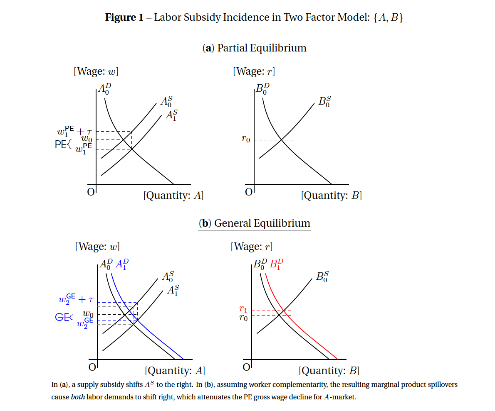
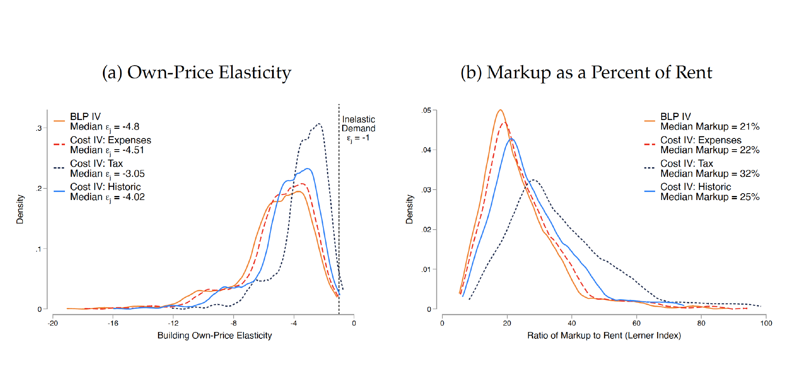
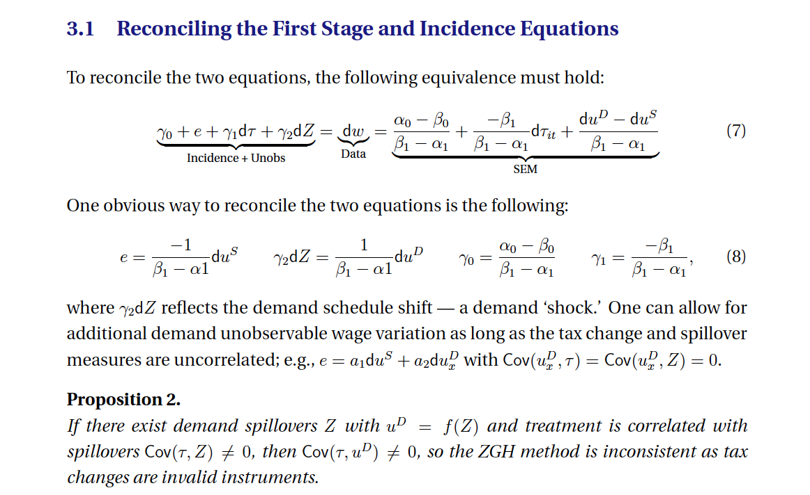
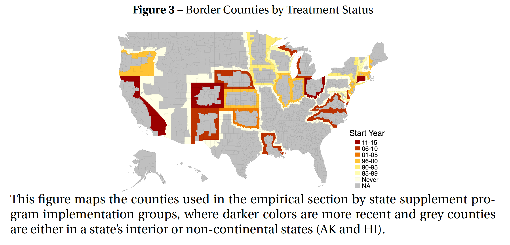

C. Luke Watson
Home
Research
Blog
Other People
CV
Categories
All
(4)

The General Equilibrium Incidence of the Earned Income Tax Credit
My JMP
Jul 31, 2022
C. Luke Watson

Is the Rent Too High? Land Ownership and Monopoly Power
Is it?
Jan 1, 2022
C. Luke Watson, Oren Ziv

Estimating Both Supply and Demand Elasticities Using Variation in a Single Tax Rate with General Equilibrium Spillovers
A note about using tax IVs
Oct 1, 2021
C. Luke Watson

The Local Effects of State EITC Expansions
Chapter 2 of my dissertation
Aug 1, 2021
C. Luke Watson
No matching items